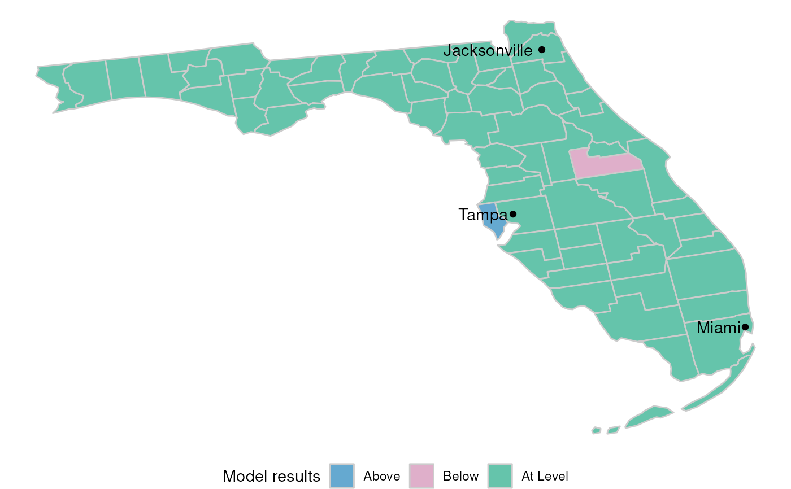
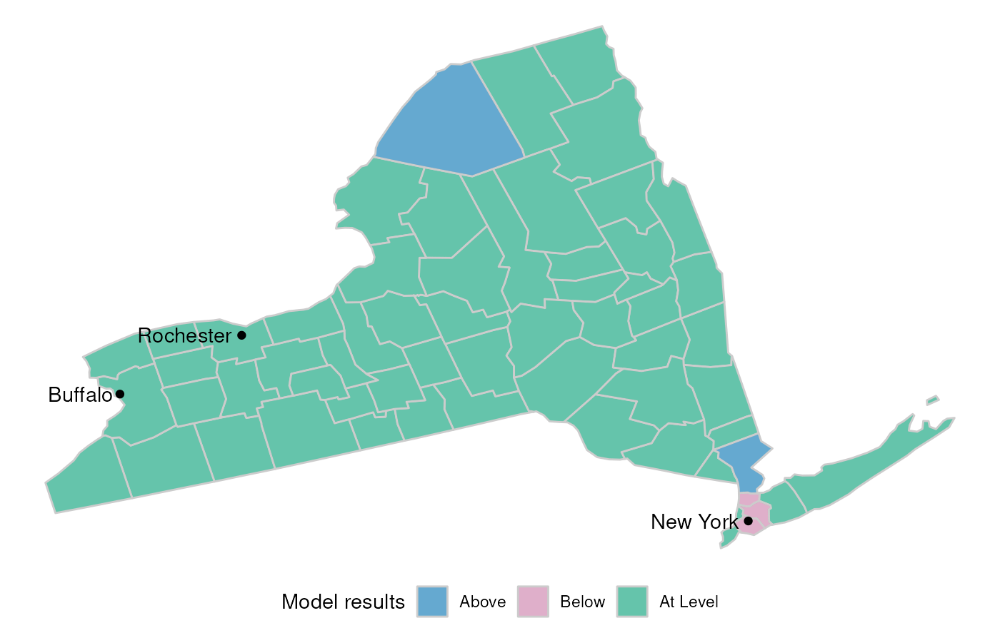
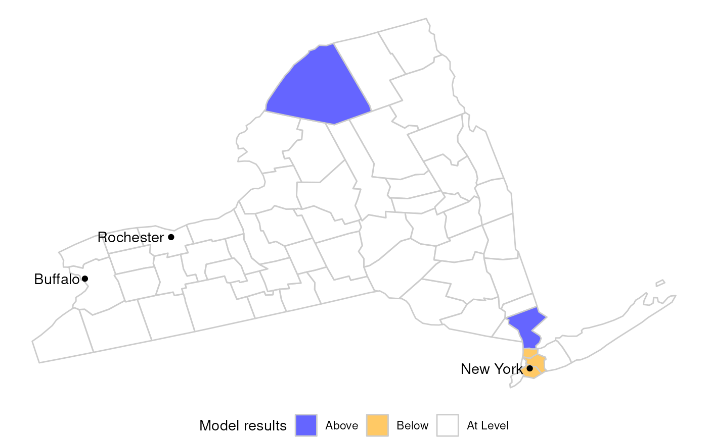
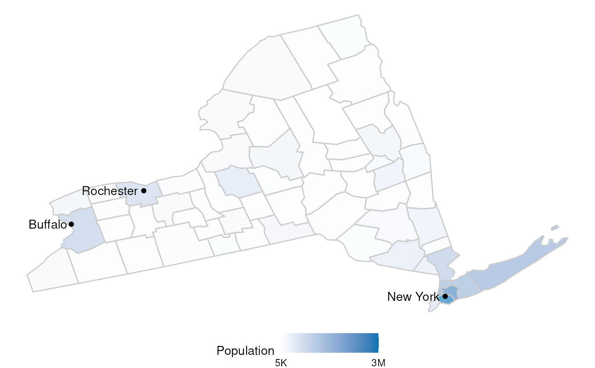
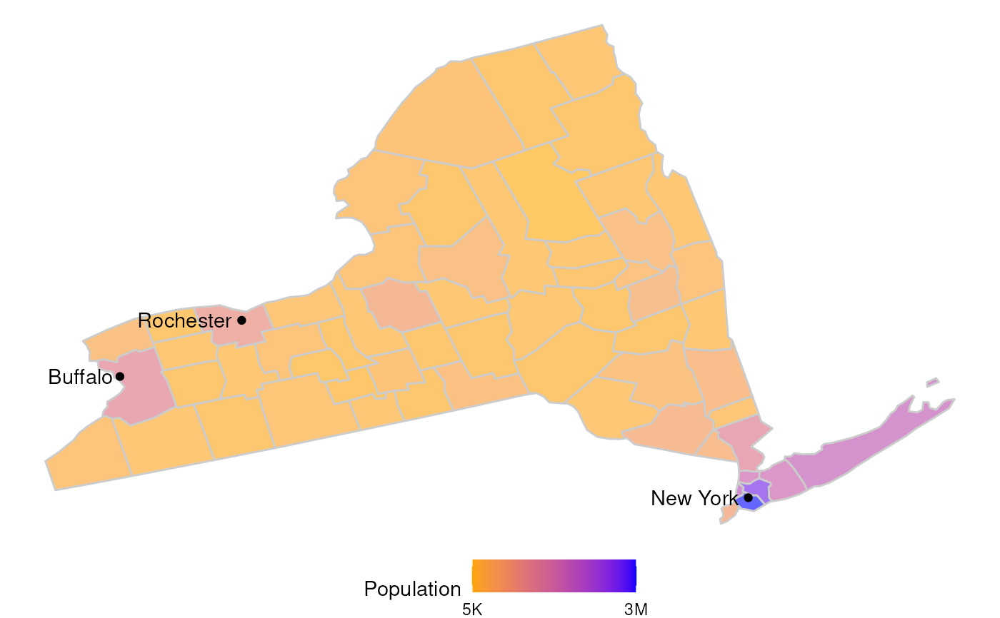
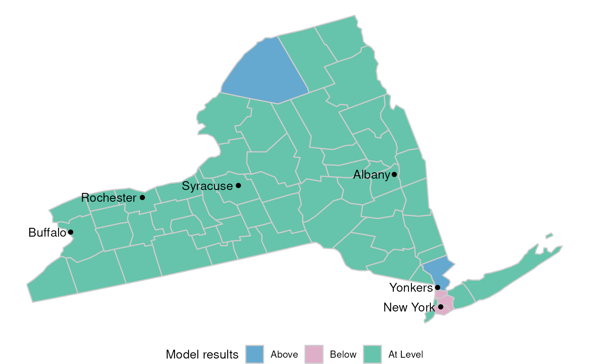

Returns a plot with the actual shape of the state, and highlights each county with a color. The color will depend on which variable is being used to plot.
Arguments
- state
The state's name. Use "All US" if a map of all states is to be plotted.
- variable
The variable to use for the plot. Possible values are: model, population or hospitals.
- colors
A list of two colors. One for the value of the high number and the other for the low number.
- model_colors
A list of 3 colors to use for counties below, above or at the level of expected hospitals as per the model.
- top_cities
Plots the most populated cities. The default is to plot the 3 most populated cities. To avoid displaying any cities, use 0.
Examples
library(accesstocare)
atc_plot_state_map()

atc_plot_state_map("New York")

atc_plot_state_map(
"New York",
model_colors = list(above = "blue", below = "orange", ok = "white")
)

atc_plot_state_map(
"New York",
variable = "population"
)

atc_plot_state_map(
"New York",
variable = "population",
colors = list(low = "orange", high = "blue")
)

atc_plot_state_map("New York", top_cities = 6)
